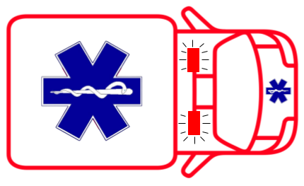

Better Bridgeway Builder
Fire Lane - Emergency Access Only
A dedicated fire lane ensures emergency vehicles can pass through quickly and safely.
With bike lanes, curbside delivery, and rapid flashing beacons, this design prioritizes
both safety and emergency access.
According to California Vehicle Code 22500.1, no vehicle may stop, park, or stand in a designated fire lane except when necessary to avoid traffic conflicts or when directed by law enforcement.
Watch as vehicles pull over to make way for emergency vehicles, while cyclists and pedestrians can safely navigate the street.
According to California Vehicle Code 22500.1, no vehicle may stop, park, or stand in a designated fire lane except when necessary to avoid traffic conflicts or when directed by law enforcement.
Watch as vehicles pull over to make way for emergency vehicles, while cyclists and pedestrians can safely navigate the street.


Emergency vehicles need clear access through this corridor.